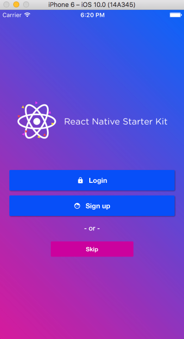
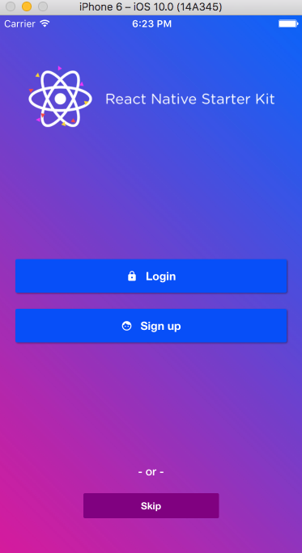
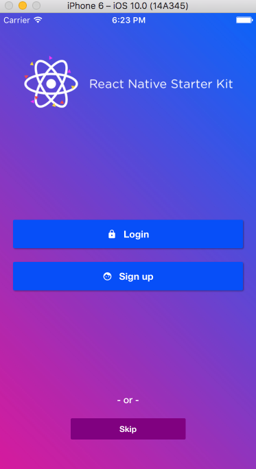
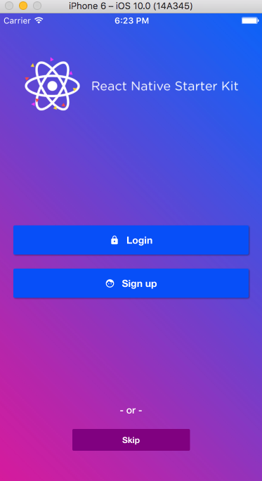
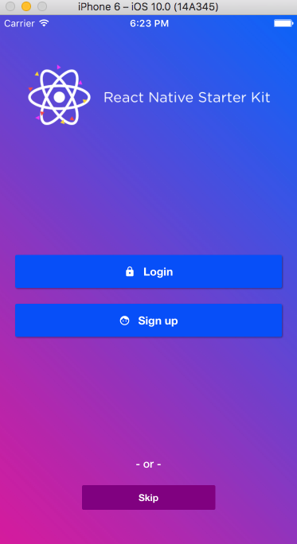

Why should we utilize it?
How to use it with React Native?
Establishing a parent element with {flex: 1}
Setting the main axis with {flexDirection}
Spacing along the main axis with {justifyContent}
 -  - 
Spacing along the cross axis with {alignItems}
Positioning a black sheep with {alignSelf}
Avoid hiding input fields behind the keyboard
...or else it'll get UGLY
Contain an icon or image with {flex: -1}
Want to start styling React Native mobile apps?
- 
Spacing along the cross axis with {alignItems}
Positioning a black sheep with {alignSelf}
Avoid hiding input fields behind the keyboard
...or else it'll get UGLY
Contain an icon or image with {flex: -1}
Want to start styling React Native mobile apps?
 - 
- 